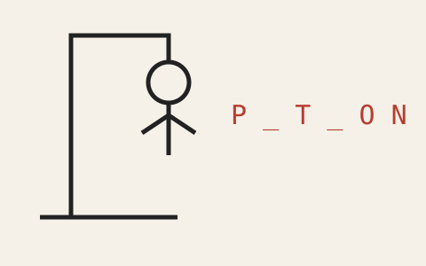
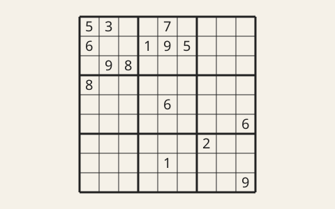

J’ai réalisé un jeu dans lequel il faut retrouver un mot en proposant des lettres. À chaque erreur, une nouvelle partie du dessin apparaît.

Illustration du principe du jeu, pas une capture de mon programme.Le principe du jeu
Les lettres trouvées permettent de compléter le mot. Le joueur doit le deviner avant que le dessin soit terminé.
Un solveur de sudoku
En terminale, j’ai réalisé seul un programme pour résoudre des grilles de sudoku. Il s’agissait d’un devoir individuel.

Illustration d’une grille de sudoku.Le problème à résoudre
Il faut compléter une grille avec les chiffres de 1 à 9, sans répétition dans une ligne, une colonne ou un carré de trois cases sur trois.
Et après ?
J’aimerais travailler dans l’ingénierie en lien avec l’informatique. Je n’ai pas encore choisi de spécialisation précise ; mes études me permettent de découvrir plusieurs possibilités.